为新中国奠基——中共中央在香山
1949年3月，中共中央机关离开西柏坡，进驻北平香山。香山成为中国共产党领导解放战争走向全国胜利、新民主主义革命取得伟大胜利的总指挥部。展览《为新中国奠基——中共中央在香山》通过800余件珍贵文物、图片和文献，系统展示了中共中央在香山期间指挥解放全中国、筹备新政协、筹建新中国的光辉历史。
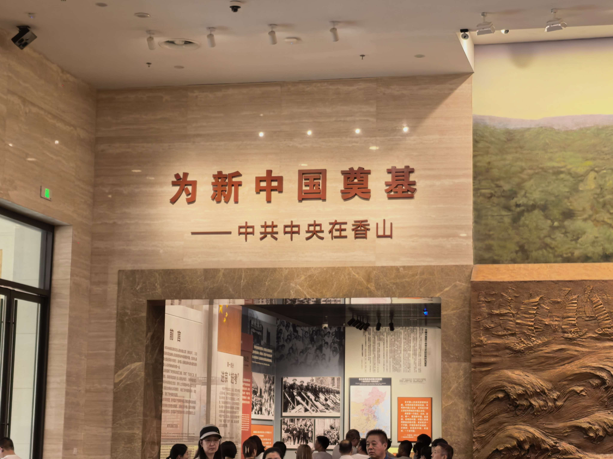
历史时间线
从西柏坡到香山，从指挥决战到开国大典，1949年的中国迎来历史巨变。
中共中央入驻香山
3月23日，中共中央机关离开西柏坡向北平进发，毛泽东同志把此行比喻为"进京赶考"。25日，中共中央进驻香山，毛泽东居住在双清别墅，这里成为党中央指挥全国革命的中心。
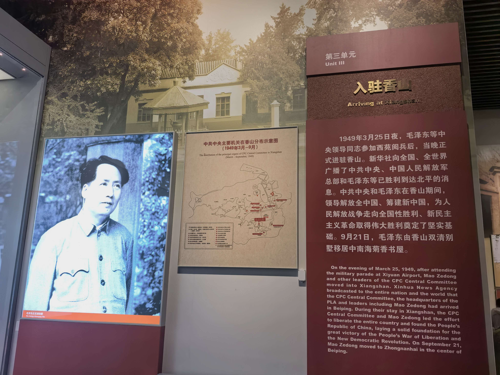
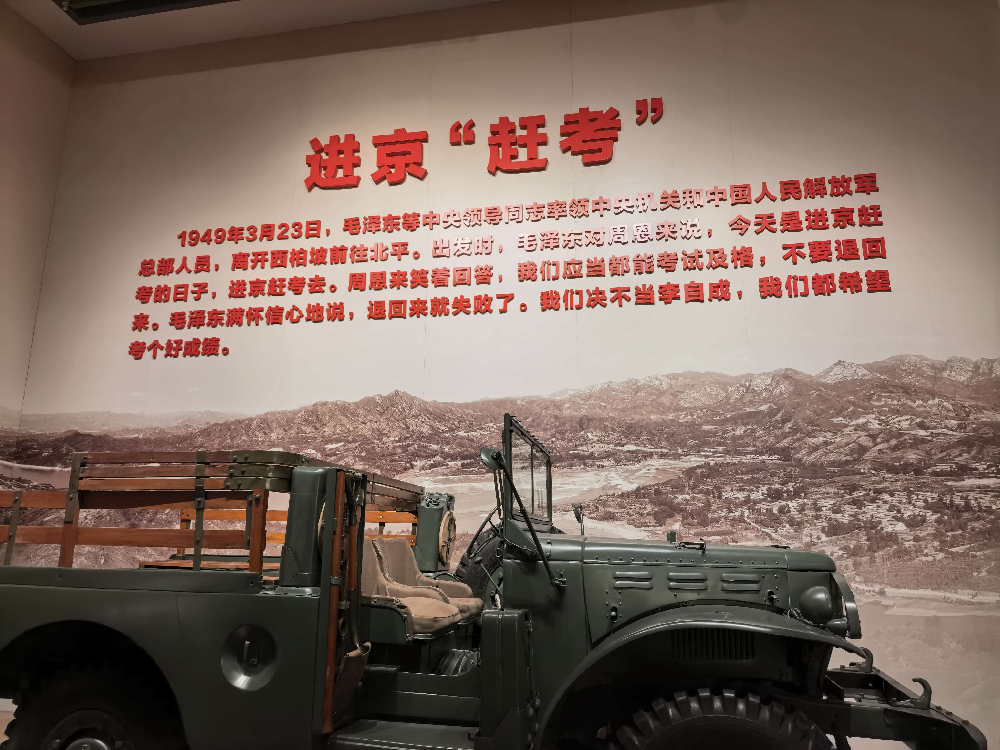
指挥解放全中国
在香山，毛泽东、朱德等老一辈革命家运筹帷幄，签发渡江战役命令，指挥人民解放军打过长江去，解放全中国。香山的一间间简陋办公室里，决定着中国革命的前途命运。
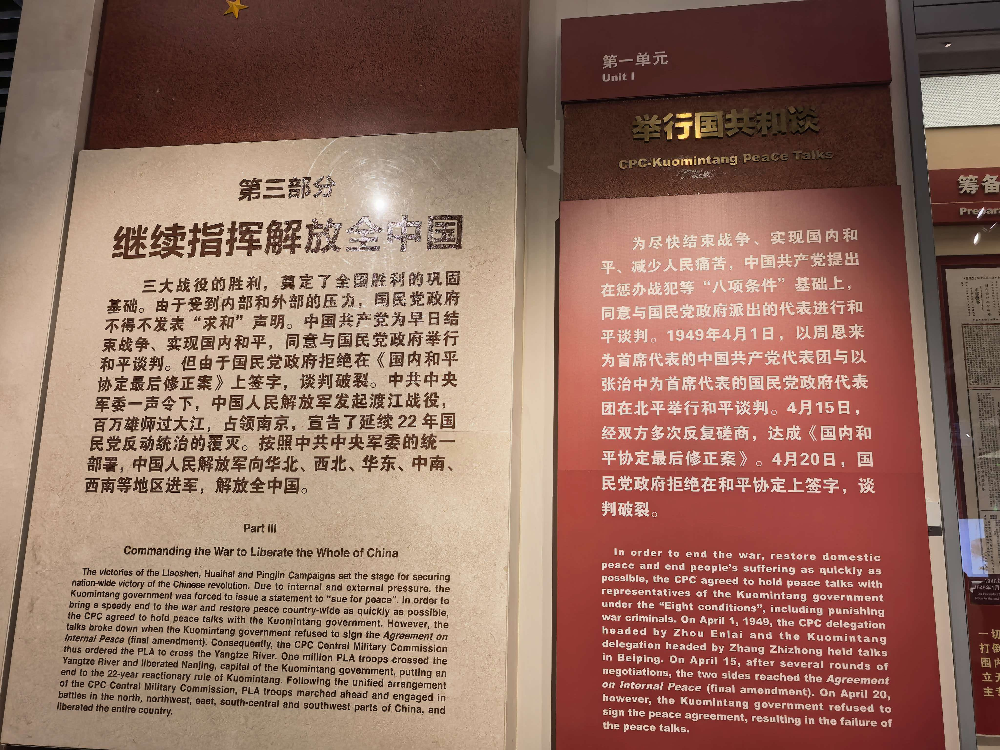
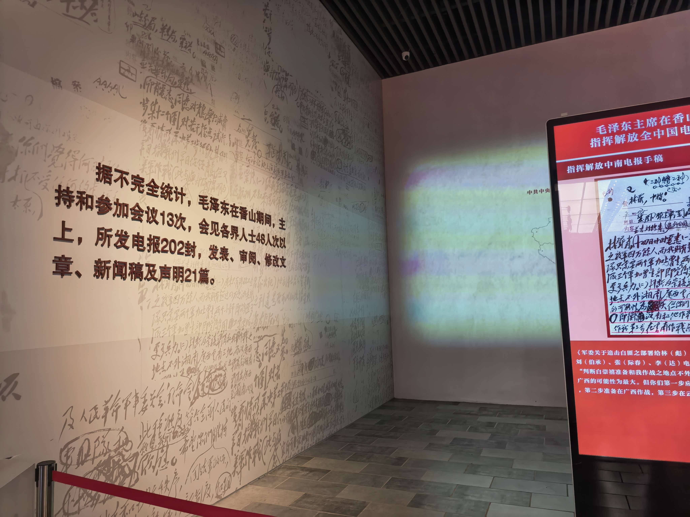
南京解放
4月23日，人民解放军占领南京，宣告国民党反动统治的覆灭。毛泽东在香山写下"宜将剩勇追穷寇，不可沽名学霸王"的著名诗句，表达了将革命进行到底的坚定决心。
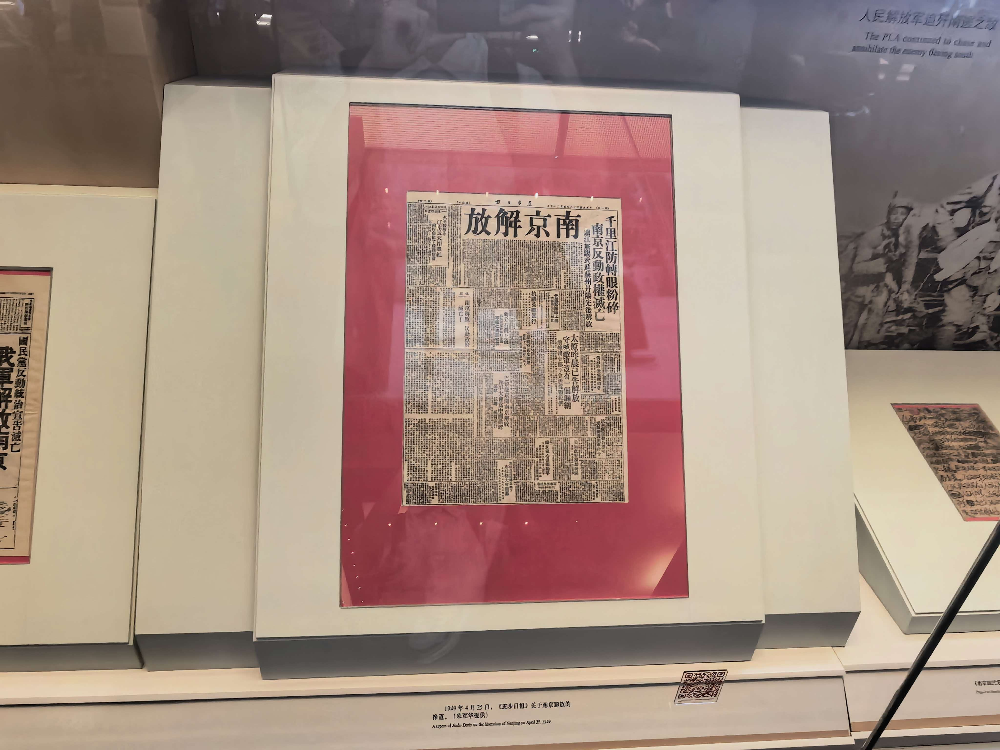
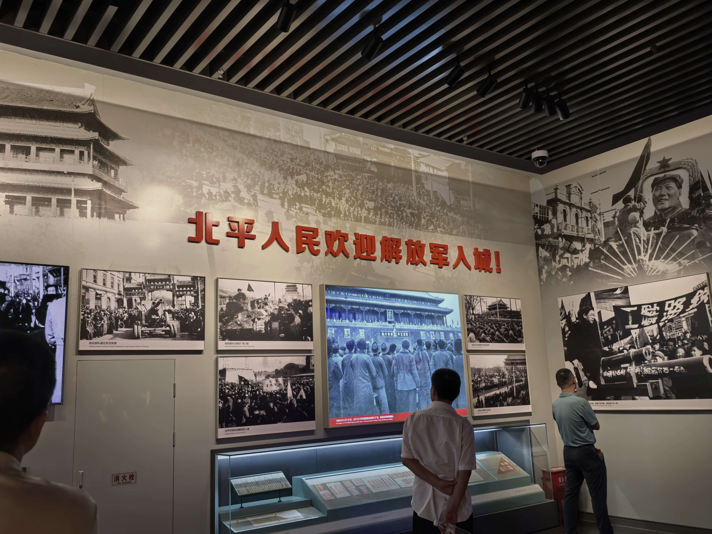
筹备新政协
中共中央在香山广泛团结各民主党派、无党派人士和各族各界代表，共同筹备召开新的政治协商会议。新政协的筹备，为建立工人阶级领导的、以工农联盟为基础的人民民主专政国家奠定了政治基础。
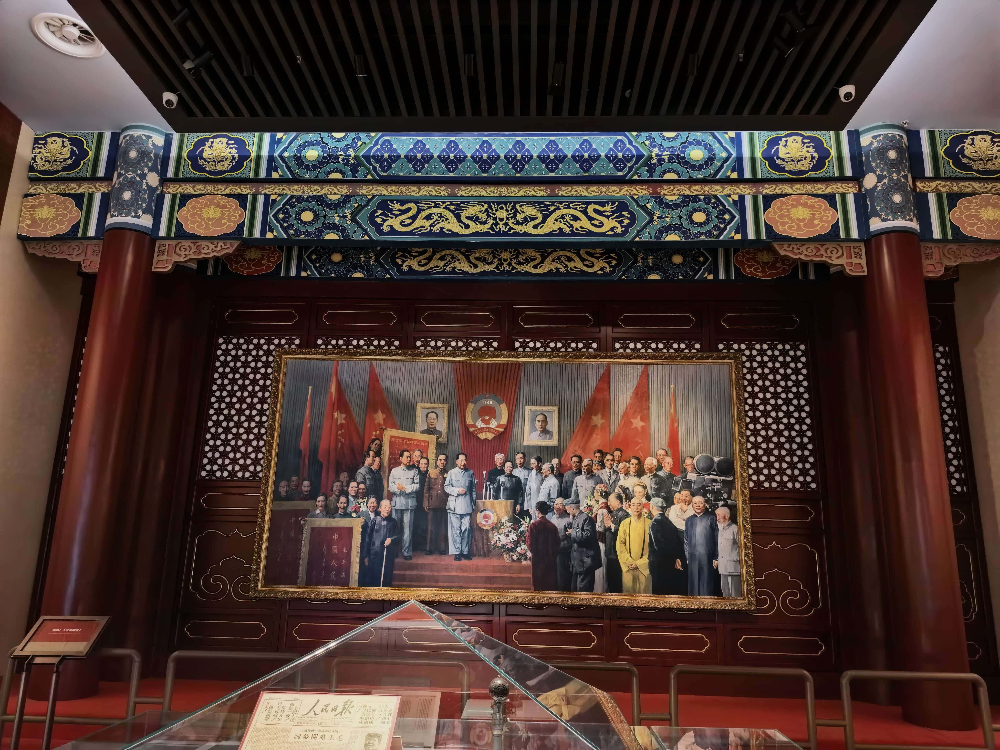
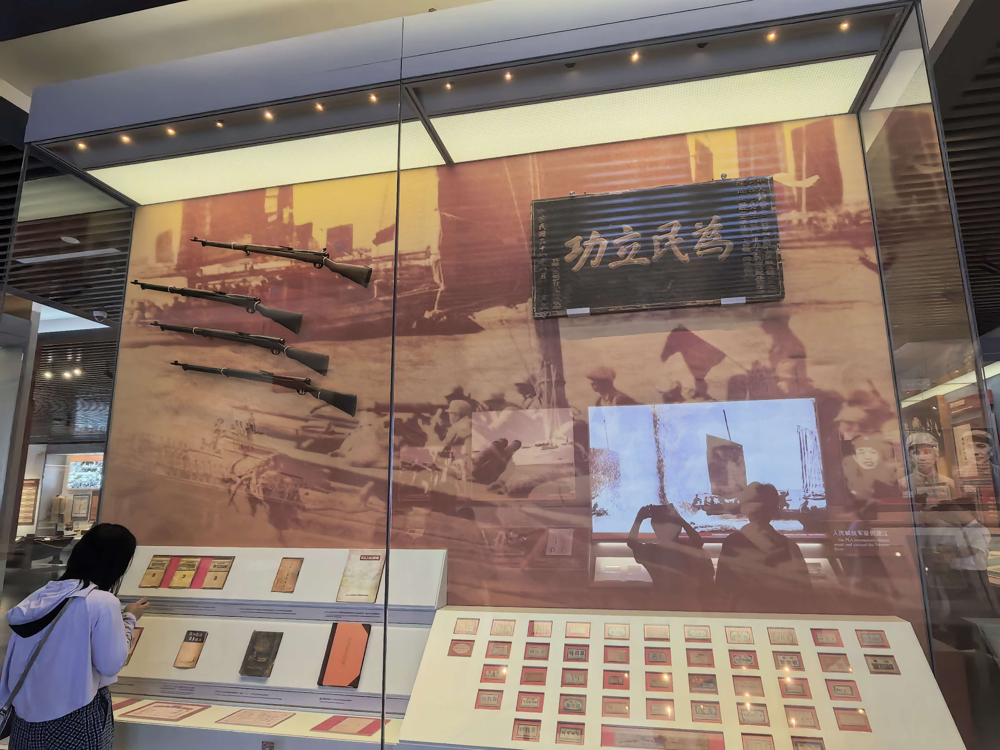
开国大典
10月1日，中华人民共和国成立，中国人民从此站起来了。香山作为中共中央最后一个农村指挥所，完成了它光荣的历史使命，新中国从这里昂首走向世界。
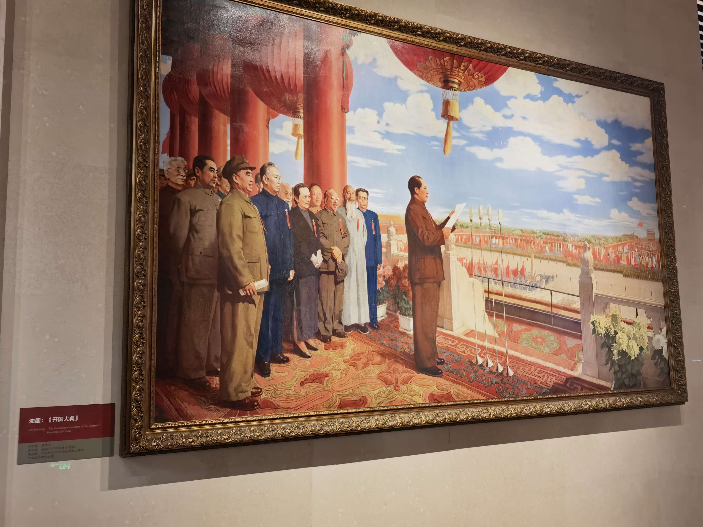
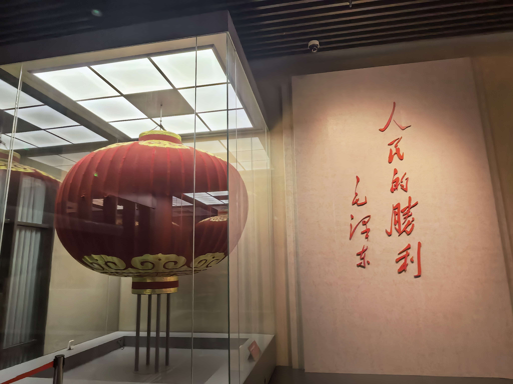
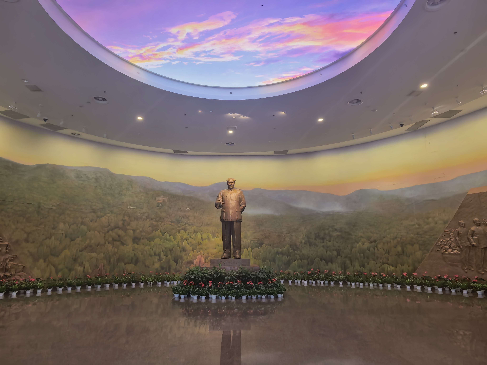
青年实践感悟
站在香山革命纪念馆里，一幅幅历史照片、一件件珍贵文物让我感受到"进京赶考"的深刻内涵。简陋的办公桌、泛黄的电报稿，见证着老一辈革命家运筹帷幄的智慧与担当。他们离开西柏坡时那番"决不当李自成"的告诫，至今振聋发聩。作为新时代青年，我们也正走在自己的"赶考"路上，唯有脚踏实地、接续奋斗，才能交出无愧于时代的青春答卷。